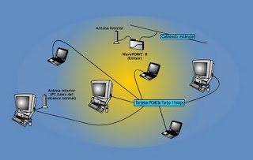
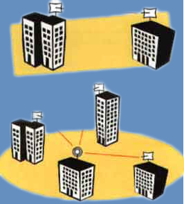

REDES INALÁMBRICAS
La red inalámbrica
que ITcom ofrece a sus clientes permite a cualquier empresa la transmisión
de datos de manera flexible y segura sin la necesidad de ceñirse al cableado
instalado. Nuestra red inalámbrica envía todos los datos necesarios a
través de ondas de radio cifradas, lo que elimina la posibilidad de interceptación
e interferencias en la señal.
Gracias a esta tecnología se puede llegar hasta donde no el cable no llega,
o este es demasiado costoso o complicado de instalar. También proporciona
una plataforma para la interconexión en red local de equipos en constante
movimiento, portátiles o en instalaciones meramente temporales (para salas
de exposiciones, congresos, naves, etc.).
ITcom ofrece a sus clientes dos modalidades de red inalámbrica. La WaveLAN
(local) y el enlace punto a punto.
WaveLAN Red local inalámbrica
La red inalámbrica local es un perfecto sustitutivo del cableado tradicional para montar una red local. En lugar de transmitir la información por medio de cable, se transmiten a través de ondas de radio cifradas, con lo que se elimina una costosa y problemática instalación.
En sólo unos minutos, la red local inalámbrica estará lista para funcionar, transmitiendo fiablemente la información gracias a las antenas emisoras / receptoras y tarjetas decodificadoras para cada equipo.
Esto permite la perfecta movilidad de los equipos en red dentro del radio de cobertura de la red inalámbrica, radio que se extiende en las tres dimensiones y que es fácilmente ampliable con las antenas adecuadas. Esto hace de la red inalámbrica un soporte robusto, seguro y poco problemático para todo tipo de edificios.
Las ondas de la red inalámbrica no se bloquean ni se distorsionan por objetos sólidos, por lo que pasan fácilmente a través de puertas, tabiques, suelos y techos, y su señal cifrada y de frecuencia modificable por el usuario permite la total ausencia de interferencias, con una velocidad de transmisión de 10 megabytes por segundo.
Esto hace a nuestra red inalámbrica la solución perfecta para:
- Ampliación de redes locales cableadas.
- Cobertura en puntos de difícil conexión por cable.
- Entornos de trabajo de configuración constantemente variable en tiempo casi nulo.
- Acceso a la red local para ordenadores portátiles.
- Despliegue de redes locales para picos de trabajo o instalaciones de obra.

Con esto podemos ahorrar en espacio, por ejemplo, estableciendo areas de conexión local temporal para personal que pasa mucho tiempo fuera de las instalaciones como los comerciales, sin necesidad de tener recursos ociosos en una instalación fija. Permite que los ordenadores portátiles de este personal estén dentro del grupo de trabajo local en el momento en que estos entren en el puesto de trabajo, con lo que nos ahorramos el coste de un ordenador fijo de otra manera ocioso durante gran parte del tiempo.
También permite un ahorro de costes en instalaciones fijas en entornos de difícil cableado como puede ser una nave repleta de valiosas instalaciones de fabricación o edificios con características especiales como un edificio histórico o de valor arquitectónico. Así como la fácil expansión o limitación, si fuera necesario, de la red actual con sólo añadir o retirar módulos.
Punto a Punto Red inalámbrica de conexión entre centros
El enlace punto a punto proporciona soluciones de conectividad para empresas con centros de trabajo múltiples que necesiten de una gran coordinación y trabajo compartido. Este enlace proporciona a la empresa un entorno de intercambio de información con un coste periódico de cero, tan sólo la información. Es el complemento exterior perfecto a una instalación interior de red local estándar o inalámbrica.
Efectivamente, todos los centros conectados por el enlace punto a punto formarán parte de una única red local, exactamente como si estuvieran en el mismo edificio, pero con la flexibilidad que proporciona la distribución multicentro, imprescindible en el entorno empresarial cambiante de hoy en día.
Gracias a la potente antena o parrilla de emisión / recepción, que utiliza un protocolo similar al de la red local inalámbrica, pero con un alcance extendido; pueden unirse mediante el enlace punto a punto centros situados hasta a 15 kilómetros. Esto nos proporciona los beneficios que supone compartir una red local con una velocidad de transferencia de 10 megabytes por segundo, sin ninguno de los costes ni problemas asociados a una interconexión estándar, que pueden ser la diferencia entre una instalación eficiente y con beneficios y una instalación caótica y en números rojos. Es la gran alternativa a las costosas y problemáticas lineas dedicadas de alta velocidad entre centros.
Esto nos permite:
- La efectiva creación de una macro-red local como suma de las redes locales ya existentes (ya sean inalámbricas o de cable).
- La coordinación entre grupos de trabajo en puntos distantes entre sí hasta 15-20 kilómetros (extensible mediante la instalación de repetidores).
- Una velocidad de transferencia real de 10 megabytes por segundo.
- Transmisión de voz sin necesidad de línea telefónica.
Punto a multipunto
El enlace punto a multipunto es la versión del punto a punto para la conexión rápida y fiable de más de dos instalaciones.
Para reducir costes, este sistema consta de una instalación central dotada de una antena multidireccional, a la que apuntan las antenas direccionales del resto de centros. Esto nos da una capacidad igual a la del punto a punto, peo extensible hasta a 16 centros (incluso más con instalaciones replicadas).

Interconectividad y modularidad
Ambos sistemas son perfectamente modulares e interconectivos. Con sólo unos minutos para configurar e instalar se tiene una extensión de la red en mucho menos tiempo del que cuesta introducir cualquier modificación en una red local.
Es más para modificar cualquier punto de una red local, basta con mover el equipo y dos minutos de reconfiguración, se volverá a tener conexión en menos de lo que se tardó en enchufar el equipo a la red eléctrica, sin necesidad de cablear, agujerear etc.
Todo lo anterior es perfectamente aplicable también para el enlace punto a punto, si un centro cambia de ubicación, basta con cambiar la antena al nuevo centro y reorientar la conexión, sin desperdicio de cables ni costosos equipos y, para añadir un nuevo centro a la conexión inalámbrica, basta con equiparlo con su kit punto a punto y reconfigurar la red durante unos minutos para tener cobertura total.
Además, tanto la red inalámbrica local, como el enlace punto a punto son perfectamente compatibles e interconectables, tanto entre ellos como con cualquier tipo de red local o enlace remoto, y pueden servir a cualquier tipo de sistema, ya sea Linux, Windows® NT/98/2000, cualquier UNIX etc. Así se pueden enlazar una red local inalámbrica con otra red local por cable mediante un punto a punto sin que ninguna de ellas se resienta en su funcionamiento o sufra cualquier tipo de incompatibilidad de uso.